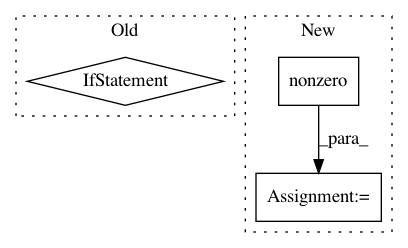

90b78b1379b3423aa3b4b5d0de7313f88bda23ab,chainercv/utils/mask/mask_to_bbox.py,,mask_to_bbox,#,5
Before Change
bbox = []
for msk in mask:
where = np.argwhere(msk)
if len(where) > 0:
y_min, x_min = where.min(0)
y_max, x_max = where.max(0) + 1
else:
y_min, x_min, y_max, x_max = 0, 0, 0, 0
bbox.append((y_min, x_min, y_max, x_max))
if len(bbox) == 0:
return xp.empty((0, 4), dtype=np.float32)
return xp.array(bbox, dtype=np.float32)
After Change
R, H, W = mask.shape
xp = cuda.get_array_module(mask)
instance_index, ys, xs = xp.nonzero(mask)
bbox = xp.zeros((R, 4), dtype=np.float32)
for i in range(R):
ys_i = ys[instance_index == i]
xs_i = xs[instance_index == i]
In pattern: SUPERPATTERN
Frequency: 3
Non-data size: 3
Instances
Project Name: chainer/chainercv
Commit Name: 90b78b1379b3423aa3b4b5d0de7313f88bda23ab
Time: 2019-02-17
Author: yuyuniitani@gmail.com
File Name: chainercv/utils/mask/mask_to_bbox.py
Class Name:
Method Name: mask_to_bbox
Project Name: scikit-learn-contrib/imbalanced-learn
Commit Name: 3e44c79a4254da2bf9972dccda44f50517393ad7
Time: 2015-06-30
Author: fmfnogueira@gmail.com
File Name: unbalanced_dataset/ensemble_sampling.py
Class Name: BalanceCascade
Method Name: resample
Project Name: dit/dit
Commit Name: a1890b56835ef626b1a32edcaf28c1e2b10baa48
Time: 2015-03-19
Author: chebee7i@gmail.com
File Name: dit/algorithms/maxentropyfw.py
Class Name:
Method Name: isolate_zeros